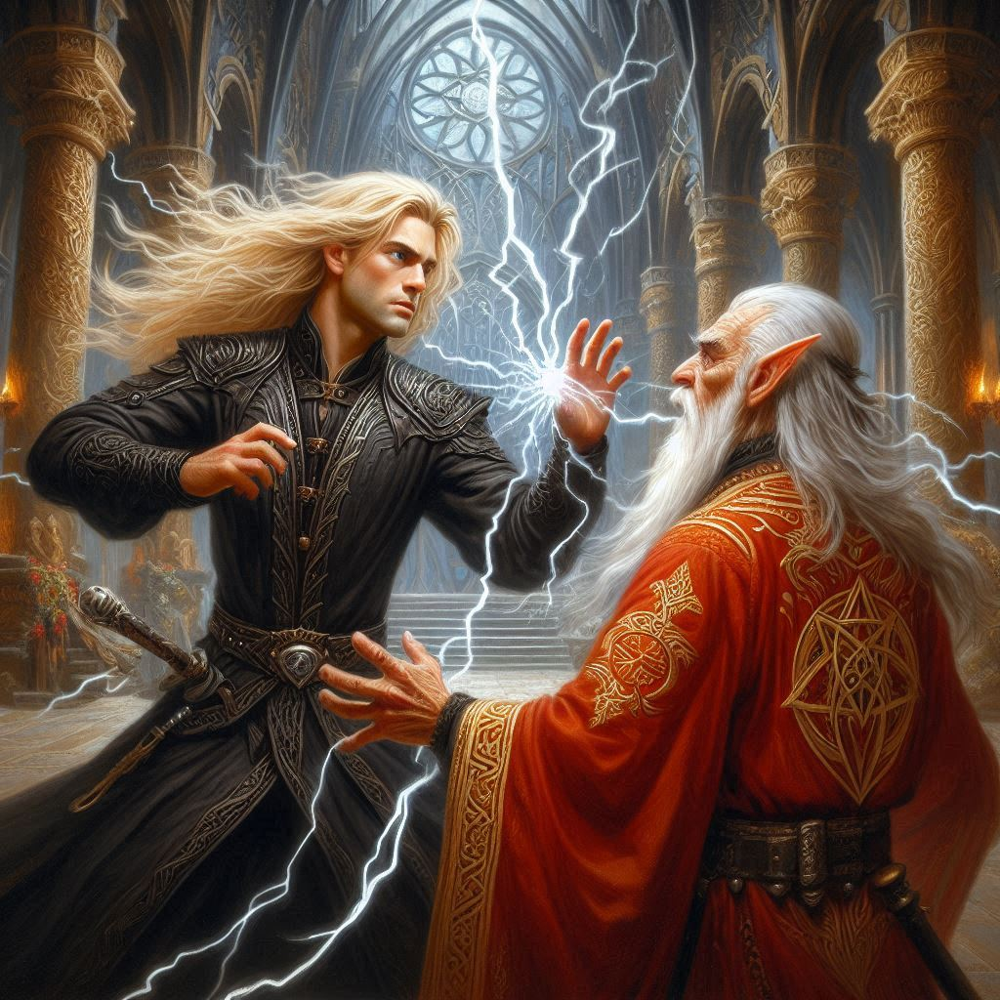
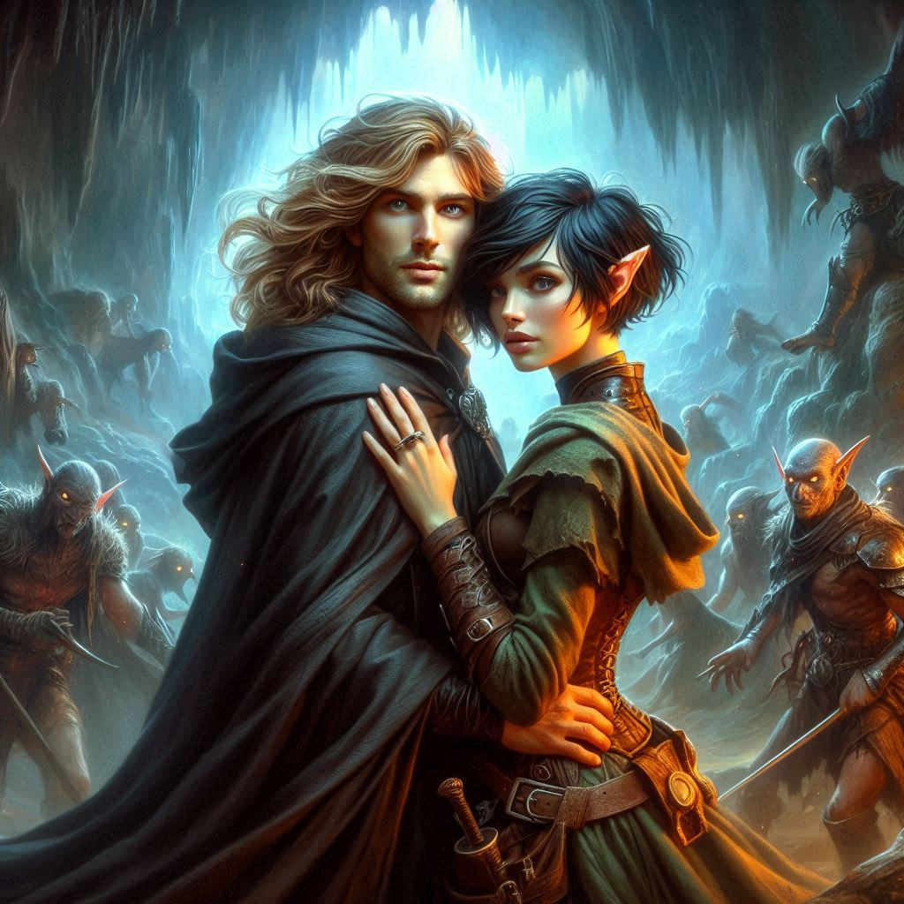

The Darkness Within
You stand at the precipice of a decision, the weight of your oath to Yew clashing with the undeniable pull of your past and your present with Jorsh. His words still ring in your ears—his plea, his belief that he must wield the power of the dark arts to save your world from Varis and Yaldaboath. The air in Umbra’Thal is thick with magic, the shadows alive, twisting and curling as if eager to devour you both.
Jorsh’s eyes gleam with a darkness that should frighten you. Instead, it mesmerizes. He stands tall beside you, his presence commanding, his magic palpable. He reaches for your hand, and when your fingers meet, a cold but familiar energy surges through you. You look into his eyes, searching for the boy you once knew—the one you loved. You see glimpses of him beneath the layers of shadow, but there is something else too—something new and powerful. His love for you is real, but so is the power he now wields. And in that moment, you decide.
You follow Jorsh deeper into the heart of Umbra'Thal, the black spires of the dark city looming over you. The streets are silent but alive with the presence of dark elves, their eyes glowing faintly from shadowed doorways. You can feel the weight of their stares, but Jorsh’s presence shields you. Together, you move like a storm through the twisted streets until you reach the temple of Yaldaboath.
The ancient stone structure towers before you, dark magic swirling in the air. You can feel its pull, the malevolent force of the demon god lurking just beyond the veil. Jorsh steps forward, his eyes narrowing as he surveys the temple’s entrance. “Varis is inside. He won’t be expecting us this soon,” he says, voice low and dangerous.
You nod, gripping your weapon tightly. There’s no turning back now.
Inside the temple, the atmosphere is suffocating. Dark runes glow faintly on the stone walls, and the air hums with magic. At the center of the room, Varis stands before a glowing portal, his back to you. Onyx is bound to an altar, the dark magic swirling around him like a serpent, slowly draining his life force.
You glance at Jorsh, whose expression hardens. “Now,” he whispers, and before you can blink, Jorsh strikes.
A wave of dark magic surges from his hands, crashing into Varis with the force of a storm. Varis stumbles, caught off guard, but recovers quickly, raising a shield of his own magic. The two forces clash violently, the air crackling with energy. You feel the power of the battle tugging at your very soul.
Jorsh’s eyes burn with determination, his magic fueled by his anger, his love, his need to end this. With a roar, he pushes harder, his dark energy overwhelming Varis’s defenses. Varis falters, his eyes wide with panic as Jorsh’s magic seeps into him, draining him of his strength.
“Jorsh, no!” Varis gasps, his voice a mix of fear and disbelief.
But Jorsh is relentless. His hands tighten into fists, and with a final surge, he rips the dark mana from Varis’s body, absorbing it into himself. Varis crumples to the ground, lifeless, his body dissolving into shadow.
For a moment, the air is still, the only sound is the crackle of magic in the air. Then, slowly, Jorsh turns to face you. His eyes glow with a darkness that wasn’t there before, his body pulsing with the raw power he has absorbed. He looks both triumphant and burdened, as though the weight of his victory comes at a cost.
“It’s done,” he says, his voice soft but edged with something you can’t quite place. “Varis is gone. The portal… it’s ours now.”
You take a step toward him, your heart pounding in your chest. “What now, Jorsh?”
He looks at you, his eyes softening as he reaches out to touch your cheek. “Now, we control the dark elves. With Varis gone, the Council of Shadows will seek new leadership. If we leave, the chaos will spread, and Yaldaboath will rise unchecked. But together… we can stop him. We can rule Umbra’Thal. We can save Yew from its doom.”
His words sink into you, heavy and final. There is no return to Yew for you, not with the power that now surrounds you both. You see the path before you, one where you and Jorsh rule over the Realm of Shadows, where you stand together against the forces that would see both realms fall to darkness.
But at what cost?
Jorsh steps closer, his breath warm against your skin as he leans in, his voice a whisper. “Kira, we can be together—always. We can rule this world and keep the darkness at bay. I need you by my side.”
You feel your heart lurch, torn between the weight of your duty and the pull of his love. For so long, you’ve fought against the idea of being with him, of being drawn into his darkness. But now, standing here, you see the future in his eyes—the power, the unity, the love.
You nod, your decision final. “I’m with you, Jorsh. Until the end.”
He smiles, a mixture of relief and triumph, and pulls you into an embrace. The darkness swirls around you both, a new power awakening in you as you pledge yourself to him, to this new life. Together, you will rule, not as conquerors but as protectors, keeping the balance between light and shadow.
The portal hums behind you, and as you step forward, hand in hand with Jorsh, you feel the weight of your choice. There’s no turning back now. The two of you are bound, not just by love but by the power that courses through your veins, by the fate that you now share.
The shadows part as you enter the portal, leaving behind the world you once knew and stepping into a new destiny.